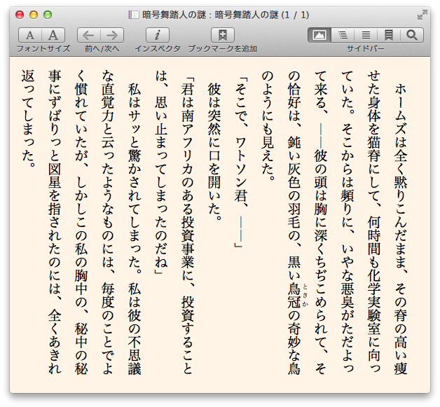

- 
主要な機能
スクロール
Murasaki はウェブブラウザのようにページをスクロールして EPUB のコンテンツを表示します。iBooks のようなページめくりをベースとしたリーダではありません。
パージネーション
（横組みのみ）本文をカラム構成したパージネーション表示をサポートしています。自由なスクロールとカラムにスナップする動作を併せ持つハイブリッドな表示形式です。
スワイプナヴィゲーション
二本指スワイプでページ移動することができます（Mac OS X 10.7〜）。スクロールとスワイプを用いてトラックパッドのみで読み進めることができます。
マルチウィンドウ
複数の EPUB を同時に開けるというだけではなく、ひとつの EPUB の別々の箇所を複数のウィンドウで同時に閲覧することができます。
Popover
リンクを Popover で開くことで、関連する別のページや脚注等を素早くチェックすることができます（Mac OS X 10.7〜）。
画像パネル
コンテンツ中の画像をパネルで開いておくことで、図版等を参照しながら文章を読み進めることができます。
検索
EPUB に含まれるページを横断して語句の検索をすることができます。
ブックマーク
ページをブックマークしておいて、あとから参照することができます。
フルスクリーン
フルスクリーンモードにすることで、画面いっぱいにコンテンツを表示することができます（Mac OS X 10.7〜）。
ユーザスタイルシート
ユーザ定義のスタイルシートを適用することで、自分好みの体裁で閲覧することができます。
Popover 辞書
Mac OS X 標準の Popover 辞書を使用することで、単語の意味を素早く調べることができます。